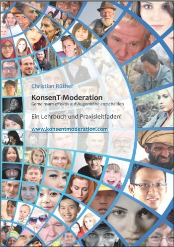

Ihr Team oder Ihre Organisation will gemeinsam auf Augenhöhe entscheiden? Ich begleite Sie mit Beratung, KonsenT-Moderation von Meetings und Klausuren und Workshops zu SKM, S3 und Holakratie.
Rufen Sie an (werktags 8 bis 17 Uhr) oder schreiben Sie mir. Ich melde mich persönlich bei Ihnen.
